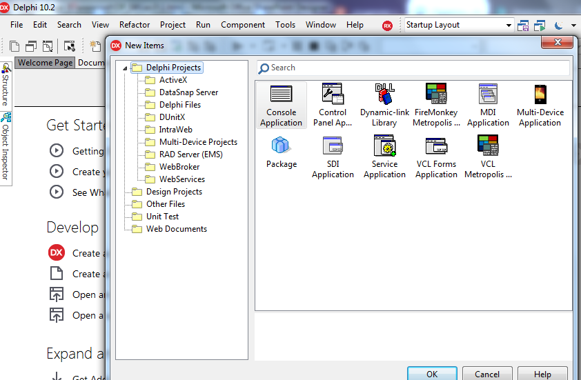
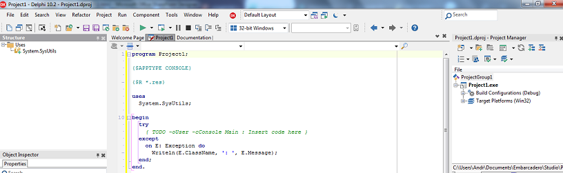
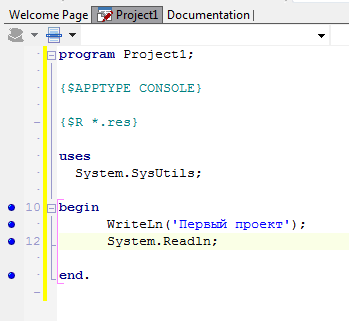
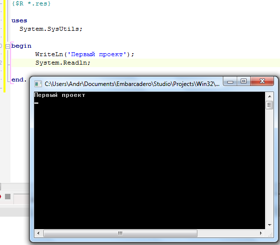
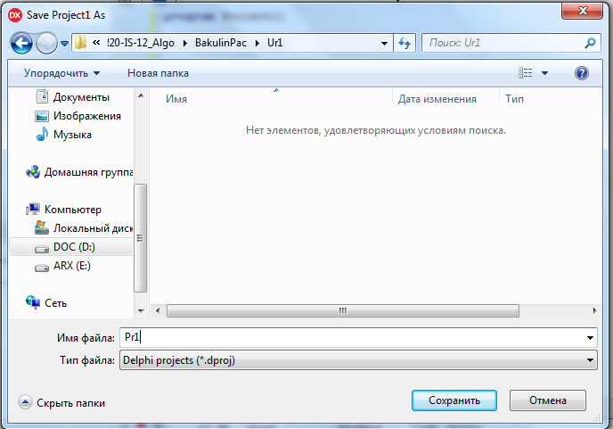
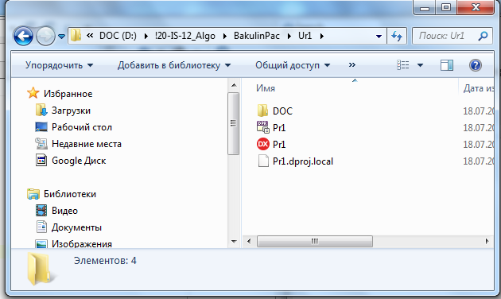
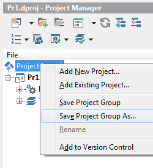
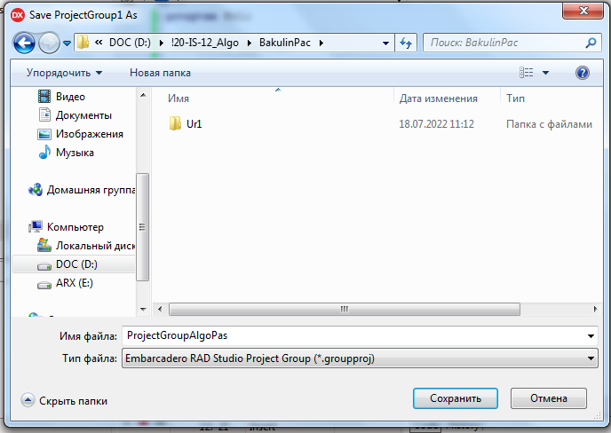
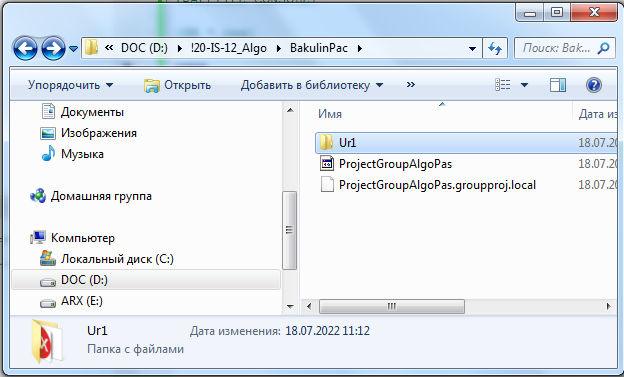

|
Создаем консольное приложение к уроку 1
Порядок
выполнения:
1. Загрузите Embarcadero® Delphi 10.2 .
2. Из меню File выберите
команду New
| Other, затем на вкладке New появившегося
диалогового окна New Items -
тип создаваемого приложения — Console
Application.

Рис.1. Выбор создаваемого консольного приложения в окне New
Items
Из шаблона формируется файл программы

Рис.2. Шаблон
главной процедуры консольного приложения
3. В результате этих действий на экране появится окно Project1.dproj, в
котором можно набирать инструкции программы (Рис.2).
Директива {$APPTYPE CONSOLE} предназначена для компилятора и
сообщает ему, что программу нужно генерировать как консольное
приложение.
Далее используем знания языка Pascal: операторы записывается
между begin и end, константы и переменные объявляются выше
основной программы, процедуры и функции размещают между
объявлением переменных и основной программой.
Добавьте в тело программы строчку Writeln('Первый проект!').
Запустите ее на выполнение, щелкнув по кнопке или нажав клавишу F9.
4. Быстро появится и исчезнет черное окно. Как следует поступить
далее, чтобы можно было “остановить” это окно? Простейший метод
— добавить оператор Readln.

Рис.3. Окно с кодом программы
5. Запустите программу на выполнение.

Рис 4. Результат выполнения программы Console.dpr
6. Сохраните проект в отдельной папке D:\!20-IS-12_Algo\BakulinPac\Ur1
под именем Pr1,
выбрав пункт меню File-Save All. В
момент сохранения проекта имя программы будет автоматически
заменено на имя, под которым сохранен проект.


Создайте дополнительную папку DOC для
хранения отчета
7. Сохраните файл решения (групповой файл) в корень папки
D:\!20-IS-12_Algo\BakulinPac изменив имя ProjectGroupAlgoPas


В результате получим
 |